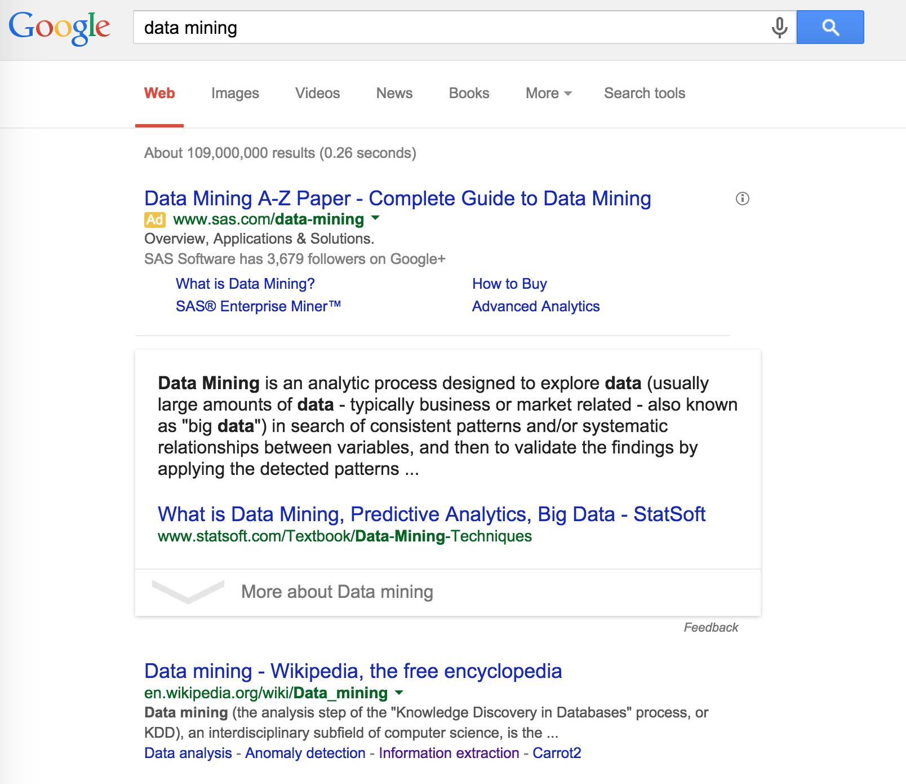
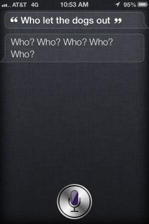
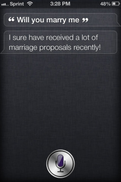
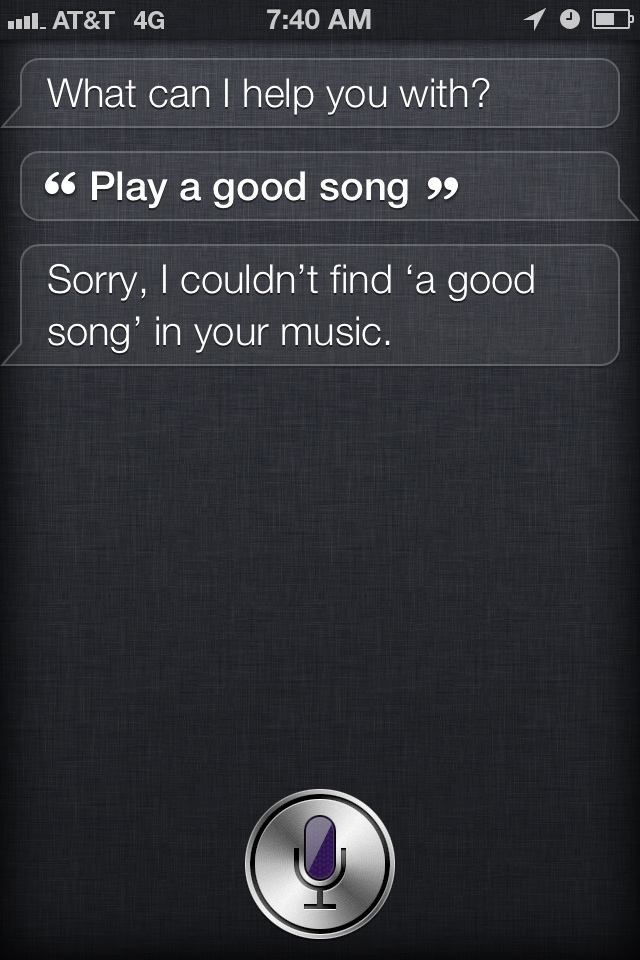
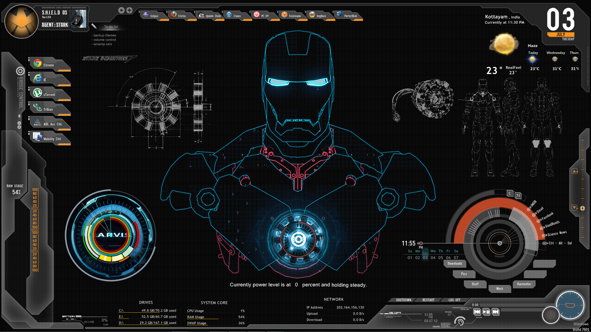

이번 시간이 끝나고 나면: 데이터마이닝에 대해 정의할 수 있게 됩니다.
한 마디로 "데이터마이닝"은?
대용량의 데이터에 담긴 의미있는 규칙을 찾는 일
그런데 데이터마이닝(data mining)은...
- 많은 자료 속에 숨어있는 일정한 패턴(규칙)을 발견하는 일이기에 패턴인식(pattern recognition)의 영역과 맞닿아 있으며
- 컴퓨터를 학습(훈련)시키는 기계학습(machine learning)과도 유사합니다
- 좀더 발전적인 개념으로는 인공지능(artificial Intelligence)도 있어요
2014년 기준 데이터마이닝, 패턴인식, 기계학습, 인공지능에 대한 구글 트렌드. 음? 그렇다면 빅데이터(big data)는? 데이터사이언스(data science)는?
이 영역들은 각기 다른 탄생 배경을 가지고, 엄밀하게는 철학과 목적이 상당히 다르기도 하지만, 방법론의 측면에서는 상당히 유사해서 각 영역끼리 서로 배우는 점도 많지요. 사실 공부도 같은 책으로 많이 해요. (심도있는 공부를 원하시는 분들은 아래 책들도 한 번 찾아보세요!)


데이터가 우리 삶을 돕는 다섯 가지 방법
-
문서 랭킹: Google
 -
질의응답 (QA): Apple Siri
  cf. IBM Watson

데이터가 우리 삶을 바꿀 가지 방법
- Jarvis and Samantha
 - IOT
데이터마이너가 되면 좋은 점
- 세상의 다양한 면을, 다양한 관점에서 살펴볼 수 있습니다
- 마케팅부터 시작해서,
- 주가의 흐름을 예측하거나(금융),
- DNA 분석이나 MRI 영상을 분석하기도 하며(의료),
- 디지털 카메라에서 얼굴 인식(기계)을 하기도 합니다.
- 사실상 직업이 매일 바뀌는 것이나 다름없음
- 물론 그 외에도 우리가 상상할 수 있는 대부분의 영역에 데이터마이닝이 적용된다는 사실!
다음 시간 예고: 데이터마이닝을 할 때 가장 중요한 것은? Asking the right question.